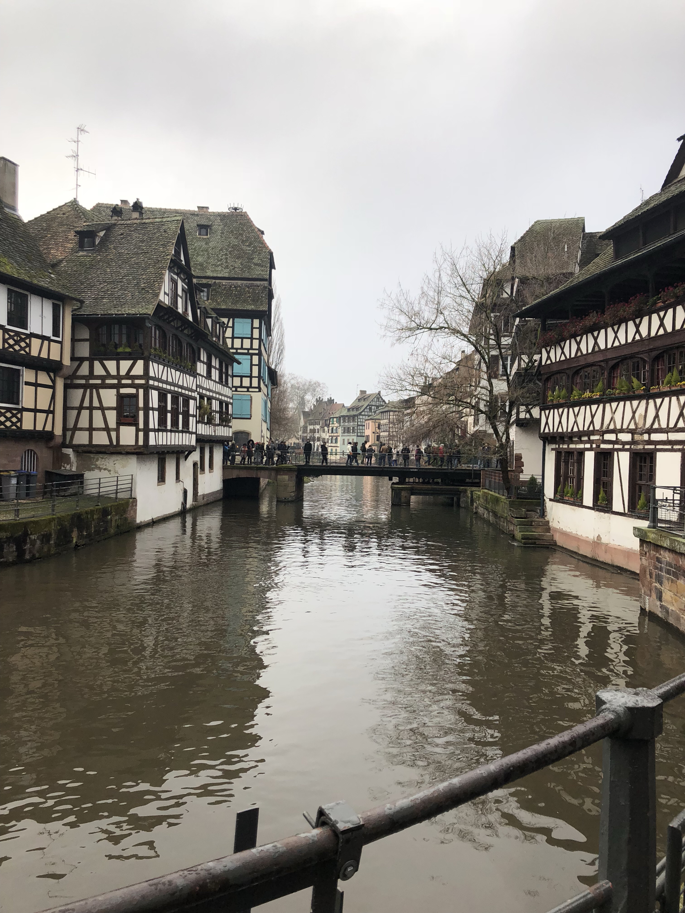
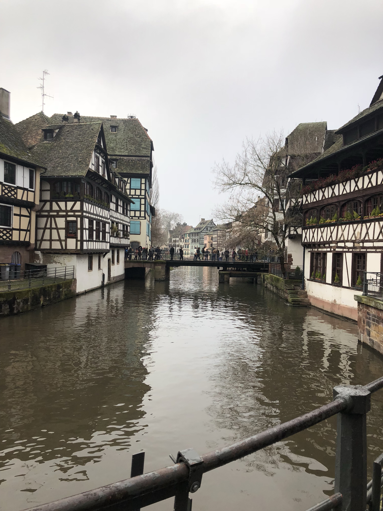
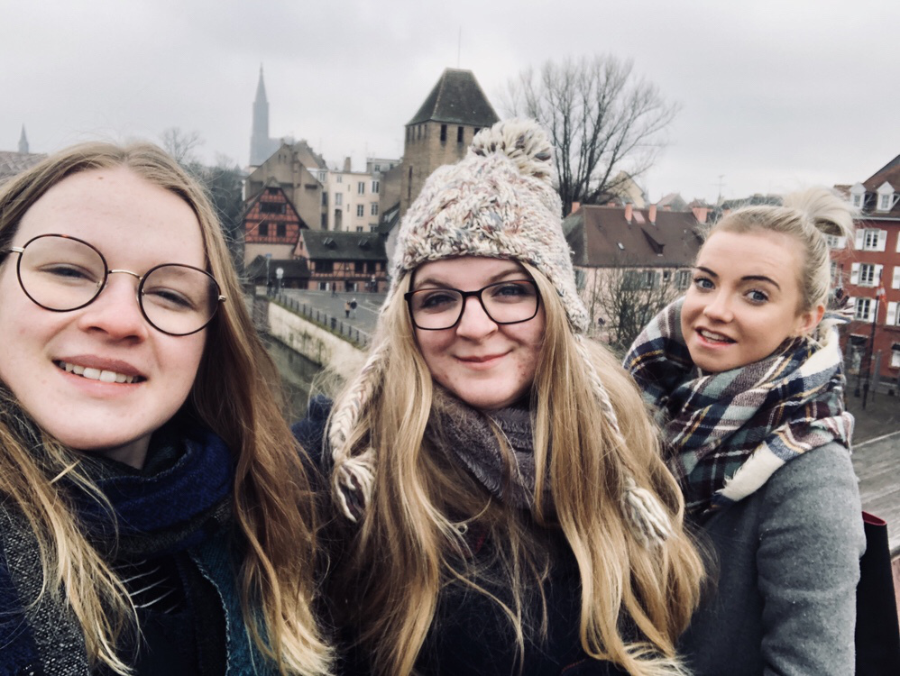
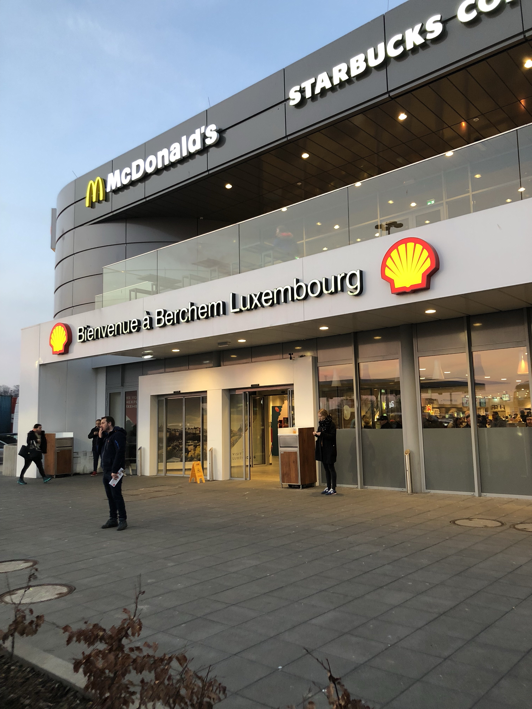

So, as promised I have managed to get another weekly post out on what is now becoming a blog about all the things I do while I'm not in Brussels unlike within Brussels, as the name would suggest. Maybe I'll have to change it to Around Europe instead?
A couple of weeks ago when I decided I wanted to go to Strasbourg, I was looking into various modes of transportation but all of them were either ridiculously expensive or ridiculously long hours (think more than 10 hours on a bus). Unfortunately, this wasn't going to work out with going for just the weekend because we didn't want to spend half of our time stuck on a bus. Then I remembered BlaBlaCar. Now most people in the UK haven't heard of this system, I know I certainly hadn't until a few months ago! Basically, you have someone driving from A to B with x number of spare seats in their car. They advertise those seats on the app BlaBlaCar. Then someone like me who wants to go from A to B comes along and buys one of the seats for a fraction of the time/cost of the public transport. And there we have a mutually beneficial system. Also, the people who tend to use this app are usually up for a chat and you end up having a great time during the journey! Obviously everything is safe, people's identities are verified before they can take part and I can read all the reviews about my chosen driver.
I was travelling to Strasbourg with 2 of my friends from uni here in Brussels, and our outbound journey was with a guy called Paul who was actually from Strasbourg! So he was able to give us some great tips of what to do once we got there and even dropped us off right outside the door of our AirBnb! 
The AirBnb was another great find because I definitely feel like I've had my fair share of the '12 people to a dorm' experience! We were in a lovely little apartment just a few minutes away from La Petite France with 2 twin beds and a sofa bed.
So after arriving we had some time to get dinner and get ourselves settled before heading out to the other end of the sort of island that makes up the city centre, because one of my friends from Glasgow uni was having a party for his birthday. We had a really great time meeting new people and there was the most adorable rabbit in the apartment!
So here we were having fun and looking forward to the rest of our time in Strasbourg, but we hadn't anticipated how colder than freezing cold it was going to be the next day! There was also this constant almost snow but usually sleet/rain that just chilled us right to the bone! But, when this happens there's nothing to do but make the most of it so we persevered with having a look around the Cathedral (half for shelter and half because it was beautiful) and then going on the free walking tour in the afternoon.
A couple of weeks ago when I decided I wanted to go to Strasbourg, I was looking into various modes of transportation but all of them were either ridiculously expensive or ridiculously long hours (think more than 10 hours on a bus). Unfortunately, this wasn't going to work out with going for just the weekend because we didn't want to spend half of our time stuck on a bus. Then I remembered BlaBlaCar. Now most people in the UK haven't heard of this system, I know I certainly hadn't until a few months ago! Basically, you have someone driving from A to B with x number of spare seats in their car. They advertise those seats on the app BlaBlaCar. Then someone like me who wants to go from A to B comes along and buys one of the seats for a fraction of the time/cost of the public transport. And there we have a mutually beneficial system. Also, the people who tend to use this app are usually up for a chat and you end up having a great time during the journey! Obviously everything is safe, people's identities are verified before they can take part and I can read all the reviews about my chosen driver.
I was travelling to Strasbourg with 2 of my friends from uni here in Brussels, and our outbound journey was with a guy called Paul
who was actually from Strasbourg! So he was able to give us some great tips of what to do once we got there and even dropped us off
right outside the door of our AirBnb!

The AirBnb was another great find because I definitely feel like I've had my fair share of the '12 people to a dorm' experience! We were in a lovely little apartment just a few minutes away from La Petite France with 2 twin beds and a sofa bed.
So after arriving we had some time to get dinner and get ourselves settled before heading out to the other end of the sort of island that makes up the city centre, because one of my friends from Glasgow uni was having a party for his birthday. We had a really great time meeting new people and there was the most adorable rabbit in the apartment!
So here we were having fun and looking forward to the rest of our time in Strasbourg, but we hadn't anticipated how colder than freezing cold it was going to be the next day! There was also this constant almost snow but usually sleet/rain that just chilled us right to the bone! But, when this happens there's nothing to do but make the most of it so we persevered with having a look around the Cathedral (half for shelter and half because it was beautiful) and then going on the free walking tour in the afternoon. 
Safe to say that after nearly 2 hours standing around outside we desperately needed to warm up, so we went into le bureau de tourisme for the third time that day to warm up enough so that we could regain the use of our fingers and look up a good café. It was close to getting dark at this point and we knew we wanted to go out for a drink later so we just headed back to the AirBnb for some chill time/dinner before meeting up again with my friends Robert and 2 of his friends in "Le Troquet des Kneckes" which is a really great Alsatian bar.
I had Fischer which is a traditional Alsatian beer and the atmosphere in the bar was really good! It was so busy so we were lucky to manage to get a table, and I would definitely recommend this bar if you ever find yourself in Strasbourg. Just know that you have to have a table, because you order and pay from your table rather than the bar.
Then on the Sunday morning we basically did the things that it had been too cold to do the day before. This included wandering round La Petite France and visting Le Palais de Rohan.
And last but not least, trying some tarte flambé. Tarte flambé is a rectangular and very thin and crispy bit of dough topped with crème fraîche, onions and bacon lardons - and it is super super delicious!
Then came the BlaBlaCar ride home with Alexandre and another passenger, an Italian girl Annalise. The ride back was fun and we even stopped in Luxembourg to refuel and get some food so I can technically say that I went to Luxembourg this weekend as well!
All in all, I would recommend BlaBlaCar, I would recommend Strasbourg and I would definitely recommend tarte flambé!
À bientôt!